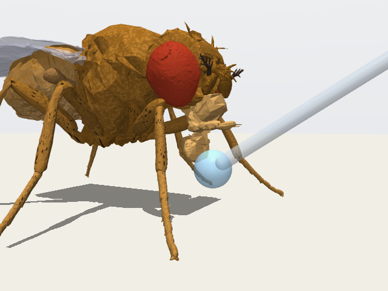
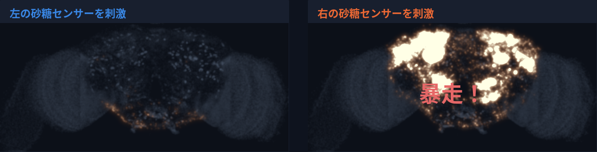

同じ脳の、左と右。
ハエの「配線図シミュレーション」を鏡で確かめる
脳の右側から同じ実験をしたら、予測がすべて外れた。原因は、ハエの脳ではなく、おそらく「地図」の作成ミスによる左右の違いだった。
30 秒でわかる要約
- ハエの脳の配線図をそのままコンピューターで動かすと、本物のハエと同じ反応を予測できる、と報告されていました。
- ところが、同じ実験を脳の右側から行うと、確かめた 6 つの予測がすべて外れ、脳の広い範囲が勝手に興奮し続ける「暴走」が起きました。
- 原因は配線図の左右の違い（おそらく地図の作成ミス）でした。暴走は、右の砂糖センサー 1 個という「入口」と、アクセル扱いの 40 個という「増幅器」がそろって起きていました。右を左に合わせてモデルの中で直すと 6 つのうち 4 つが戻りました。
- わざと誤りを入れると、偽のつなぎ目は平気でも、本物のつなぎ目の見落としは脳全体で 14〜24% で多くの予測を半分にしました。131 種類の感覚では、暴走しなかった種類でも左右の答えが広く食い違っていました。
1ハエの脳と「配線図（コネクトーム）」
この研究の主役は、台所の果物に寄ってくる小さなハエ、ショウジョウバエです。遺伝の研究などで昔から広く使われてきた生き物で、脳はゴマ粒よりも小さいのですが、その中には約 14 万個のニューロン（神経細胞）が詰まっています。
ニューロンは、電気の信号をやりとりする小さな部品です。長い「電線」を伸ばしてほかのニューロンとつながり、そのつなぎ目をシナプスと呼びます。同じ 2 つのニューロンの間に、つなぎ目が何十か所もあることがあり、つなぎ目が多いほど信号は強く伝わります。
このつながりを、脳全体について 1 本残らず書き出そうとしたのがコネクトーム（配線図）です。ハエの脳を非常に薄く切って電子顕微鏡で撮影し、膨大な画像の中の「電線」を、AI と大勢の人の手作業でたどりました。FlyWire（フライワイヤー）という国際プロジェクトが 2024 年に発表した配線図には、次のものが含まれています。
| 配線図に記録されているもの | 数 | ひとことで |
|---|---|---|
| ニューロン | 138,639 個 | 約 14 万個の部品 |
| つながり（どの細胞からどの細胞へ） | 15,091,983 組 | 約 1,510 万組の「道」 |
| シナプス（つなぎ目） | 54,492,922 個 | 約 5,450 万個の接点 |
地図アプリにたとえると
配線図は、地図アプリの道路地図のようなものです。道と交差点がすべて描かれていれば、どこからどこへ行けるかはわかります。でも、地図を眺めるだけでは、実際にどこで渋滞が起きるかまではわかりません。そこで、地図の上で車を走らせてみる、つまりシミュレーションの出番になります。
そしてもう一つ大事なこと。地図にも誤りがあります。描き忘れた道、存在しない道、信号の色の取り違え。これだけ巨大な地図を作れば、ある程度の誤りは避けられません。この研究は、まさにその「地図の誤り」がシミュレーションの答えをどう変えるか、という話です。
2配線図から「コンピューターの脳」を動かす
2024 年、Shiu（シュウ）らの研究チームは、この配線図をほぼそのまま使って、ハエの脳全体をコンピューターの中で動かすモデルを発表しました（科学誌 Nature に掲載）。ルールはとても単純です。
- 電気がたまると「パチッ」：各ニューロンは、入ってくる信号で電気がたまり、ある量を超えると一瞬「パチッ」と信号を出して元に戻ります。この「パチッ」をスパイクと呼びます。1 秒間に何回パチッとしたかを Hz（ヘルツ）で表します。たとえば 58 Hz なら、1 秒に 58 回です。
- つなぎ目の数で強さが決まる：スパイクはシナプスを通って相手に届きます。つなぎ目が多いほど強く届きます。
- アクセル型とブレーキ型：相手を興奮させる（パチッとさせやすくする）ニューロンと、相手を静める（パチッとさせにくくする）ニューロンがあります。どちらなのかは、そのニューロンが出す化学物質（神経伝達物質）の種類で決めます。この種類は、電子顕微鏡の画像から AI が推定したものです。
- 細かい個性は入れない：すべてのニューロンを同じ単純なルールで動かし、人が調整できる「つまみ」は 1 つだけです。
配線図だけで、実際のハエの反応が予測できた

このモデルで、砂糖を感じるニューロンを人工的にパチパチさせる（＝砂糖をなめたことにする）と、口吻（ハエのストローのような口）を伸ばす運動ニューロン「MN9」が活動しました。本物のハエも、甘いものに触れると口吻を伸ばします。
Shiu らはこのような予測を数多く行い、その多くが実際のハエの実験で確かめられました。「配線図さえあれば、脳の働きをかなり予測できるかもしれない」と注目された理由です。
このモデルを、画像処理用の高速な計算装置（GPU）で動く形に作り直しました。元のプログラムと比べて、ニューロン 1 個ずつの活動の強さまで一致することを確かめています（一致度を表す相関係数 r が 0.999 以上。最大値は 1）。1 秒分の模擬実験が約 0.2 秒で計算できるため、一日で多くの条件を試すことができました。
3この研究の問い：左右で答え合わせ（鏡像テスト）
ハエの脳は、人の脳と同じように左右がほぼ鏡写しになっています。左にある種類のニューロンは右にも 1 組ずつあり、つながる相手もほとんど共通していることが、配線図の研究で知られています。
だとすれば、同じ実験を脳の右側から行っても、同じ答えになるはずです。ところが、これまでのシミュレーションは、ほとんどが片側だけを刺激して行われていました。そこで私たちは、Shiu らが実験で確認した 6 つの予測を、左右それぞれから行い、答えが一致するかを確かめました。これを鏡像テストと呼びます。
確かめた 6 つの予測（専門用語でベンチマーク）は次のとおりです。どれも Shiu らが示し、実際のハエの実験でも確かめられているものです。
- 味の 3 つ：① 砂糖を感じるニューロンで MN9 が活動する。② そこに苦味を感じるニューロンの刺激を加えると、MN9 の活動が抑えられる。③ 別の味覚センサー（Ir94e という種類）を加えても抑えられる。
- 触角の 3 つ：触角の付け根にある、揺れを感じる器官（ジョンストン器官、略して JO）を刺激すると、触角の掃除（グルーミング）にかかわるニューロンが活動する。④ 同じ側の aBN1。⑤⑥ 反対側の aDN1 と aDN2。
刺激するニューロンは「種類」単位で決めました（例：左の砂糖センサーは 2 つの種類に属する 33 個すべて、触角の JO は 229 個）。Shiu らが実験に合わせて選んだ組（砂糖 21 個、JO 70 個）とは少し違います。
4 わかったこと①右から刺激すると、予測がすべて外れた
左から刺激すると、6 つの予測はすべて再現されました。ところが、まったく同じ実験を右から行うと、6 つすべてが外れました。
| 予測 | 合格ライン | 左から刺激 | 右から刺激 |
|---|---|---|---|
| ① 砂糖 → MN9（口吻を伸ばす） | 20 Hz より上 | 58 Hz 合格 | 0.4 Hz 不合格 （暴走） |
| ② 苦味で抑える | 50% より多く抑える | 89% 抑制 合格 | 不合格 （①が不成立） |
| ③ Ir94e で抑える | 50% より多く抑える | 78% 抑制 合格 | 不合格 （①が不成立） |
| ④ 触角 → aBN1（同じ側） | 20 Hz より上 | 68 Hz 合格 | 10.5 Hz 不合格 |
| ⑤ 触角 → aDN1（反対側） | 10 Hz より上 | 29 Hz 合格 | 0 Hz 不合格 |
| ⑥ 触角 → aDN2（反対側） | 10 Hz より上 | 33 Hz 合格 | 0 Hz 不合格 |
口吻の指令の代わりに、脳が「暴走」した
右の砂糖センサーを刺激すると、MN9 はほとんど反応しませんでした。代わりに起きたのが暴走です。興奮が次々に飛び火して、脳の広い範囲のニューロンが発火し続ける状態で、8,612 個のニューロンが発火しました。左から刺激したときの 412 個の約 21 倍です（脳全体は 138,639 個。この研究では 2,000 個を超えて発火した状態を「暴走」と呼んでいます）。

暴走は、刺激を始めてしばらくは左と似た反応をしたあと、突然始まりました。始まる時刻は試行ごとにばらつき、3 回の試行で 59、135、414 ミリ秒後でした。
私たちが作り直したプログラムの不具合を疑い、Shiu らの元のプログラムでも同じ実験をしました。元のプログラムでも右からの刺激で暴走が起き（刺激したニューロンを除いて 8,742 個が発火、MN9 は 0.55 Hz）、作り直しのせいではないことを確かめました。
5 わかったこと②原因は、配線図の左右の違い
右で何が違うのかを配線図の中で調べると、いくつかの左右の違いが見つかりました。どちらの側が正しいのかは本当はわかりませんが、同じ種類の細胞でこれほど違うのは不自然で、ハエの脳そのものというより、おそらく配線図を作る過程でのミスと考えられます。それに加えて、左右両方にある「アクセルとブレーキの判定ミス」の疑いが、暴走を大きくしていました。
原因 1：右の砂糖センサーのつなぎ目が、左の半分ほどしかない
砂糖を感じるニューロン 1 個あたりのつなぎ目（出力側のシナプス）は、左が平均 265 個、右は 125 個で、右は左の 0.47 倍しかありませんでした。登録されているニューロンの数も右のほうが少なく（左 33 個、右 24 個）、合計すると左 8,800 個に対して右 3,000 個です。苦味（0.64 倍）、Ir94e（0.73 倍）、水を感じるニューロン（0.36 倍）でも右が少なかった一方、触角の JO では差がありませんでした（1.18 倍）。
本当にこれが原因なのかを確かめるため、正常に動く左側から、つなぎ目をランダムに抜いていく実験をしました。すると、つなぎ目が 5,000 個を下回るあたりから MN9 の活動が急に落ち、右と同じ 3,000 個まで減らすと 1〜10 Hz になりました。右で実際に測った 1.3 Hz とよく合います。つまり、右側は「つなぎ目が抜けた左側」と同じようにふるまっているのです。
左右の同じ種類のニューロンの間で、つなぎ目の数が 2 倍も違うのは不自然です。しかも触角の JO では差がありません。どちらの側が正しいかを今すぐ確かめる方法はありませんが、右の味覚ニューロンの「電線」のたどり残しや、その部分の画像でのつなぎ目の見落としの可能性が高い、と私たちは考えています。なお、つなぎ目の不足だけでは暴走は起きません。左のつなぎ目を 90% まで削っても、発火したニューロンは最大 418 個でした。
原因 2：触角掃除のニューロン aBN1 への入力が、右では 4 分の 1
触角の予測の読み取り役である aBN1 に入ってくるつなぎ目は、左が 1,833 個、右は 459 個で、右は左の 0.25 倍でした。触角の JO から aBN1 へ直接つながるつなぎ目も、左 103 個に対して右 35 個です。原因 1 が「信号を送る側」の見落としだったのに対し、こちらは「信号を受け取る側」の見落としです。
原因 3：暴走には「入口」と「増幅器」の両方が必要だった
暴走がどこから広がるのかを、スパイクの順番をたどって調べました。すると、興奮は最初は左と同じ味の回路を通り、その後、においの情報を処理する中継所（触角葉）の中にある「局所ニューロン」を通って脳全体へ飛び火していました。さらに調べると、暴走には次の 2 つがそろう必要があることがわかりました。
入口：右の砂糖センサーのうちの 1 個。右の砂糖センサー 24 個を 1 個ずつ外して刺激してみると、ある 1 個を外したときだけ暴走が消えました（発火したニューロン 8,522 個 → 58 個）。この 1 個は、出力のつなぎ目 154 個のうち 22 個を触角葉の局所ニューロンに出していました。左の同じ種類の砂糖センサーでは、多くても 3 個です。これが地図の作成ミスなのか、このハエの本当の個性なのかは、わかりません。
増幅器：アクセル扱いの 40 個。触角葉の局所ニューロンのうち 40 個（左右に 20 個ずつ）は、AI によってセロトニンを出すと推定されていました。モデルはセロトニンをアクセルとして扱います。ところが、これまでの生物学の研究では、触角葉の局所ニューロンの多くはブレーキ役（GABA やグルタミン酸を出す型）です。また、触角葉に入るセロトニンのニューロンとして知られているのは、片側 1 個ずつの「CSD ニューロン」だけで、これは局所ニューロンではありません。さらに、この 40 個に対する AI の推定の確信度は低めでした（中央値 0.35。GABA と推定された局所ニューロンでは 0.52）。この 40 個をブレーキに直すと暴走は消え（8,680 個 → 236 個）、左側の 6 つの予測は変わりませんでした。
入口と増幅器は、どちらか一方を取り除くだけで暴走が消えます。増幅器は左右両方にあるので、右だけで暴走が起きる理由は、右にだけある入口です。一方、つなぎ目の不足（原因 1）だけでは暴走は起きませんでした。
私たちは、刺激するニューロンを「種類」単位で選びました（右の砂糖センサーは 2 つの種類に属する 24 個すべて）。Shiu らが実験に合わせて選んだ右の砂糖センサー 9 個は、入口の 1 個を含みません。この 9 個を刺激すると暴走は起きず、強い刺激（1 秒に 150 回以上）では MN9 も動きました（150 回のとき 29 Hz。左の組では 66 Hz）。右での失敗は、どのニューロンを刺激するかにも左右されるのです。
試しに、配線図の中で「セロトニン」と推定されたニューロン全部（2,201 個）をブレーキに変えてみました。暴走は消えましたが、今度は左側の「苦味で抑える」予測が消えてしまいました。左の苦味センサー 21 個のうち 7 個も「セロトニン」と推定されていたためです。しかも同じ苦味センサーでも、右では 21 個中 19 個が「セロトニン」とされていて、左右で推定がそろっていません。根拠のある場所だけを、根拠を示して直す必要があります。
6 わかったこと③直すと、6 つのうち 4 つが戻った
見つけた違いを、モデルの中で右側を左に合わせる形で順番に「修正」し、予測が戻るかを調べました。どちらの側が正しいかはわからないので、これは「この左右の違いで右の失敗を説明できるか」を確かめる実験です。修正といっても、見落とされたつなぎ目を新たに見つけたわけではありません。足りない分を補うように、つながりの強さを左と同じ水準まで掛け算で引き上げるという、モデル上の仮の修理です（砂糖センサー 2.12 倍、苦味 1.57 倍、Ir94e 1.38 倍、aBN1 への入力 3.99 倍、MN9 への入力 1.06 倍）。
| 条件 | ① 砂糖 | ② 苦味 | ③ Ir94e |
④ aBN1 | ⑤ aDN1 | ⑥ aDN2 |
合格 |
|---|---|---|---|---|---|---|---|
| 左（参考：公開されたまま） | ○ | ○ | ○ | ○ | ○ | ○ | 6 / 6 |
| 右：公開されたまま | × | × | × | × | × | × | 0 / 6 |
| 右：＋触角葉の 40 個をブレーキに | × | × | × | × | × | × | 0 / 6 |
| 右：＋味覚センサーのつながりを補う | ○ | ○ | ○ | × | × | × | 3 / 6 |
| 右：＋aBN1 への入力を補う | ○ | ○ | ○ | ○ | × | × | 4 / 6 |
- 40 個をブレーキにしただけでは、暴走は止まるものの反応が弱すぎて、まだ 0 / 6 でした。
- 味覚センサーのつながりを補うと、MN9 が 47 Hz で活動し、苦味で 85%、Ir94e で 93% 抑えられるようになりました（3 / 6）。
- aBN1 への入力を補うと、aBN1 が 74 Hz で活動しました（左は 68 Hz）。これで 4 / 6 です。
- 反対側の aDN1 と aDN2 だけは、修正しても 3 Hz 程度で戻りませんでした。まだ見つけていない別の原因が残っていると考えられます。
- すべての修正の後でも、右の砂糖刺激は左より多くのニューロンを動かしました（1,044 個 対 429 個）。左右の違いは、まだ完全には説明できていません。
7 わかったこと④誤りの種類によって、壊れ方がまったく違う
地図の誤りにはいろいろな種類があります。そこで、正常に動く左側の配線図にわざと誤りを入れ、その量を少しずつ増やしたとき、左側の 5 つの予測（砂糖で MN9、苦味と Ir94e で抑える、触角で aBN1 と aDN1）がどう変わるかを調べました。誤りの種類は 7 つです（アクセルとブレーキの取り違えは、ランダムな入れ替えと AI の判定ミスの 2 通りで調べています。表 4 では入力側・出力側の電線の途中切れを 1 行にまとめました）。誤りの入れ方は量ごとに 3 通りずつ変え、それぞれ 8 回の模擬実験をしています。苦味と Ir94e で抑える予測は、砂糖の反応が残っている間だけ評価しました。
結果は、誤りの種類によってまったく違いました。存在しないつなぎ目（偽の道）を 80% 足しても、答えはまったく変わりませんでした。ところが、本物のつなぎ目を脳全体で一様に見落とすと、多くの予測は 14〜24% の見落としで半分になりました。最も弱かったのは触角掃除の指令にかかわる aDN1 で、14% で半分です。砂糖で口吻を伸ばす反応は、20% の見落としで半分（52%）、30% で 8%、40% でゼロになりました。
| わざと入れた誤り | 結果 | 効果が半分に なる量 |
|---|---|---|
| つなぎ目の見落とし （脳全体で一様に削除） | 多くの予測が 14〜24% で半分（aDN1 は 14%、砂糖の MN9 は 21%、aBN1 は 45%）。30% で砂糖の反応は 8%、40% でゼロ | 14〜45% |
| 電線の途中切れ （入力側・出力側） | 見落としと似た傾向（aDN1 は 14〜17%、砂糖の MN9 は 20〜24%、aBN1 は 33〜44% で半分） | 14〜44% |
| 偽のつなぎ目 （ランダムに追加） | 80% 足してもまったく変化なし | 届かず |
| アクセルとブレーキの取り違え （ランダムに選んだ細胞） | 1〜2% なら平均の変化は 15% 以内（ただし 1 回ごとには最大 50% ずれる）。8〜18% で 5 つ中 4 つの予測が半分、20% では 3 回中 2 回暴走 | 8〜18% |
| AI の伝達物質の判定ミス （確信度の低い細胞ほど間違える） | 実際の誤り率に近い量（約 6% の細胞でアクセルとブレーキが入れ替わる）では、3 回中 2 回はすべての予測が 20% 以内。残る 1 回は暴走。苦味の抑制は 9%、aDN1 は 12%、砂糖の MN9 は 13% で半分（aBN1 は半分まで下がらず） | 9〜13% |
| つなぎ目の強さのばらつき | 小さいばらつきならおおむね保たれるが、中くらいで aDN1 が半分以下になり 3 回中 1 回暴走、大きいとすべて暴走 | ― |
アクセルとブレーキの取り違えは「場所」しだい
ランダムに選んだ細胞のアクセルとブレーキを入れ替えると、1〜2% の細胞なら予測の平均の変化は 15% 以内でしたが、1 回ごとに見ると最大 50% ずれることがありました。AI の判定は細胞単位で約 94% 当たる、つまり約 6% の細胞で間違っていると見積もられます。この量の判定ミスを、確信度の低い細胞ほど間違えるように入れると、3 回中 2 回はすべての予測が 20% 以内に収まりましたが、残る 1 回は暴走し、aDN1 の反応をほぼ失いました。同じくらいの量（5%）のランダムな取り違えでは暴走は一度も起きませんでした。AI の判定ミスは、平均すればランダムな誤りより悪いわけではありませんが、暴走を起こしやすい誤りだといえます。わかったこと②の「増幅器」の 40 個（脳全体の約 0.03%）も、そうした例でした。
右の砂糖センサーが失敗した理由
モデルの唯一の「つまみ」は、今の配線図に合わせて調整されています。そのため、脳全体に同じくらいずつある見落としは、つまみの調整である程度吸収されうると考えられます。問題になるのは、特定の回路だけ見落としが多い場合です。図 7 のように、左の砂糖センサーのつなぎ目だけを消していくと、約 50% を失ったところで反応が半分になります。右の砂糖センサーのつなぎ目は合計で左より 66% 少なく（3,000 個 対 8,800 個）、この点を超えていました。なお、上で述べた「14〜24% で半分」は脳全体のつなぎ目を一様に消したときの値で、別の実験です。
- 配線図の解析でよく使われる「つなぎ目が 5 個未満の弱いつながりは捨てる」という処理をすると、aDN1 の反応が 83%、aBN1 の反応が 46% 減りました。
- グルタミン酸をブレーキではなくアクセルとして扱うと、30,128 個のニューロンが暴走し、苦味と Ir94e による抑制が逆転しました。
- 脳全体の反応パターンの「似ている度合い」は、予測が崩れてもなだらかにしか下がりません（つなぎ目を 40% 見落としても r = 0.80）。全体として似て見えても、個々の予測は壊れていることがあります。
8 わかったこと⑤131 種類の感覚でも、左右の答えは食い違った
砂糖と触角だけでなく、左右それぞれに 3 個以上登録されているすべての種類の感覚ニューロン、131 種類（におい 53、触覚や振動などの機械感覚 50、味 13、湿度 4、温度 3、光 3、分類なし 5）で鏡像テストを行いました。それぞれの種類を左だけ・右だけで刺激し（1 秒に 100 回のペース、各 4 回）、答えを比べています。
暴走は、においの感覚でほぼ必ず起きていた
公開された配線図のままでは、左右どちらかで暴走が起きた種類が 131 種類中 60 種類（46%）ありました（刺激したニューロン自身は数えていません）。においの感覚に限ると 53 種類中 52 種類です。触角葉の 40 個をブレーキに直すと 8 種類（6%、すべてにおいの感覚）に減り、さらに「同じ種類の細胞は、アクセルかブレーキかを左右あわせた多数決でそろえる」修正を加えると、残りは 1 種類だけになりました。この 1 種類は光を感じる細胞 R1–6 で、片側だけで 4,000 個以上を一度に刺激するため、目の情報を処理する領域が広く反応するのは自然な応答と考えられます。
暴走を除いても、左と右の答えは一致しなかった
暴走しなかった 118 種類について、脳のどの種類の細胞がどれだけ反応するかを左右で比べました（触角葉の修正後）。同じ側を 2 回刺激した場合（偶然による違いだけ）の一致度は中央値 r = 0.99 とほぼ完全でしたが、左と右では r = 0.58 しか一致しませんでした。118 種類のうち 85 種類で、左右の一致度が「同じ側の繰り返し」の最も低い値よりも低くなっています。アクセルかブレーキかを細胞の種類ごとにそろえても、一致度は 0.62 と、ほとんど改善しませんでした。
この食い違いは、刺激したセンサー自身のつなぎ目の数の左右差とも、アクセル・ブレーキの判定の左右差とも関係がありませんでした。つまり、ずれはもっと下流の回路で生じています。たとえばにおいの感覚では、右のセンサーからの入力が、右よりも反対側の左の触角葉の局所ニューロンを強く動かしていました（刺激した側に残る活動の割合の中央値は、左から刺激すると 0.53、右からだと 0.45）。触覚などの機械感覚では、このような偏りは見られませんでした（左から 0.87、右から 0.89）。
9なぜ大事なのか
配線図シミュレーションを信じる前の「健康診断」になる
配線図から脳を動かすシミュレーションは、実験の前に「どのニューロンが働きそうか」を予想する道具として期待されています。しかし今回、左側だけで試していれば 6 / 6 で合格し、問題にはまったく気づけませんでした。同じ配線図でも、刺激する場所によっては、地図の左右の違いが答えを大きく変えてしまいます。刺激するニューロンの選び方によっても、答えが変わることがわかりました。
鏡像テストは、ほぼ「ただ」でできる
鏡像テストに必要なのは、同じ実験を反対側からもう一度計算することだけです。新しい動物実験も、追加の仮定もいりません。左右のある脳なら、ほかの動物の配線図でも使えます。
地図のどこを見直すべきかを教えてくれる
左右で答えが食い違った場所は、配線図の見直し候補になります。今回は、右の味覚センサーのつなぎ目、aBN1 への入力、触角葉に多くつながる右の砂糖センサー 1 個、触角葉の 40 個という、具体的な見直し候補が見つかりました。131 種類の感覚で見ると、左右の食い違いは砂糖と触角に限らず広く見られ、見直すべき場所はまだ多く残っていそうです。配線図は改訂が続けられているので、こうした手がかりは次の版を良くするのに役立ちます。
地図づくりでは「見落とし」を減らすことが大事
わざと誤りを入れる実験から、存在しないつなぎ目が紛れ込む誤りよりも、本物のつなぎ目の見落としのほうが、シミュレーションの答えをずっと大きく変えることがわかりました。シミュレーションに使う配線図を作るときは、「余計な道」を消すことより「道の見落とし」を減らすことを優先する理由になります。「弱いつながりは捨てる」といった、よく使われる解析上の決まりごとにも注意が必要です。
「アクセルかブレーキか」の推定は、特に慎重に
ランダムに起きる取り違えなら 1〜2% の細胞までは予測はほとんど変わりませんが、今回の 40 個のように特定の場所で起きると、ごく少数でも脳全体が暴走します。AI の判定ミスを実際の量だけ入れても、3 回に 1 回は暴走しました。AI による伝達物質の推定は便利ですが、シミュレーションに使うときは「確定した事実」ではなく「確かめるべき仮説」として扱う必要があります。
10この研究でわからないこと・限界
- 動物実験はしていません。すべてコンピューターの中の計算です。右のハエで本当に反応が違うかどうかは調べていません。
- 「修正」はモデル上の仮の修理です。つながりの強さを掛け算で補っただけで、見落とされたつなぎ目を実際に見つけたわけではありません。地図が本当に間違っているかの最終確認には、元の電子顕微鏡画像の見直しや実験が必要です。
- どちらの側の地図が正しいかは、わかりません。左右差の大きさ、触角の JO では差がないこと、これまでの生物学の知識などから、右側の作成ミスの可能性が高いと考えていますが、生物としての左右差がないとは言い切れません。修正は左側を基準にしたもので、「この違いがあれば右の失敗を説明できる」ことを示しているだけです。
- 結果は刺激のしかたにも左右されます。刺激するニューロンを種類単位で選んだ私たちの方法と、Shiu らが選んだ組とでは、右での結果が変わりました。
- モデル自体が単純です。すべてのニューロンを同じルールで動かし、アクセルかブレーキかは推定された伝達物質だけで決めています。実際のセロトニンの働きはもっと複雑で、単純なアクセルではありません。
- 説明できていない部分があります。反対側の aDN1・aDN2 の予測は、修正後も戻りませんでした。
- 確かめた範囲は限られています。使ったのは 1 匹のハエから作られた 1 つの配線図と、1 つのモデルです。別のハエから作られた配線図でも同じことが起きるかは、まだ調べていません。
- 食い違いの場所はまだ絞り込めていません。131 種類の感覚で見つかった左右の食い違いは、刺激したセンサーより下流の回路で生じていることまではわかりましたが、どこのどんな誤りなのかは特定できていません。
- 誤りを入れる実験の範囲も限られています。調べたのは左側の 5 つの予測についてで、誤りの入れ方もランダムなものに限られます。
- 一日で行った研究です。第三者によるチェックを受けて改訂しましたが、学術誌の正式な査読はまだです。
11用語集
- ニューロン神経細胞
- 電気の信号をやりとりする、脳の部品。ハエの脳には約 14 万個ある。
- シナプスつなぎ目
- ニューロンどうしが信号を受け渡す接点。同じ 2 つのニューロンの間に何か所もあることがあり、多いほど強く伝わる。
- コネクトーム配線図
- 脳のすべてのニューロンと、そのつながりを書き出した地図。電子顕微鏡の画像をもとに作られる。
- FlyWireフライワイヤー
- ハエの脳全体の配線図を作った国際プロジェクト。この研究ではその第 783 版を使った。
- スパイク・Hzヘルツ
- スパイクはニューロンが出す一瞬の電気信号（「パチッ」）。Hz は 1 秒あたりの回数で、活動の強さを表す。
- 興奮と抑制アクセルとブレーキ
- 相手のニューロンをパチッとさせやすくするのが興奮（アクセル）、させにくくするのが抑制（ブレーキ）。
- 神経伝達物質
- ニューロンがつなぎ目で出す化学物質。モデルでは、その種類でアクセルかブレーキかを決める（GABA・グルタミン酸はブレーキ、それ以外はアクセル）。
- セロトニン
- 神経伝達物質の一つ。今回のモデルではアクセルとして扱われる。画像からの AI 推定が特に難しい物質とされる。
- 口吻・MN9こうふん・エムエヌナイン
- 口吻はハエのストローのような口。MN9 は口吻を伸ばす筋肉に指令を出す運動ニューロン。
- 味覚ニューロンGRN
- 砂糖、苦味などを感じるセンサー役のニューロン。この資料では「砂糖センサー」などと呼んでいる。
- ジョンストン器官・aBN1・aDNJO
- JO は触角の付け根にあり、触角の揺れを感じる器官。aBN1・aDN1・aDN2 は触角の掃除（グルーミング）にかかわるニューロン。
- 触角葉
- においの情報を最初に処理する脳の中継所。中の「局所ニューロン」は多くがブレーキ役と考えられている。
- 暴走
- 興奮が次々に飛び火して、脳の広い範囲のニューロンが発火し続ける状態。この研究では 2,000 個を超えて発火した状態と定義した。
- 鏡像テスト
- 左右がほぼ鏡写しの脳で、同じ実験を左右それぞれから行い、答えが一致するかを確かめる方法。この研究の中心となる考え方。
- ベンチマーク
- 答え合わせ用の課題。ここでは、Shiu らが示し、実際のハエの実験でも確かめられた 6 つの予測のこと。
12よくある質問
いいえ。すべてコンピューターの中の計算です。公開されている配線図と、公開されているモデルを使いました。
おそらく違います。問題は、ハエの脳そのものより、そこから作られた「地図」の左右の違いにあると考えています。左から同じ数だけつなぎ目を抜くと左でも同じように失敗することが、その根拠の一つです。ただし、どちらの側の地図が正しいのかは本当はわからず、動物で確かめたわけでもありません。
左からの結果は、私たちの計算でもそのまま再現されました。また、Shiu らが選んだ右の砂糖センサー 9 個を刺激すると、暴走は起きず、強い刺激では口吻の指令も出ました。「配線図から多くの反応を予測できる」という元の研究の結論を否定するものではありません。わかったのは、地図の左右の違いや、刺激するニューロンの選び方によって、答えが大きく変わる場面がある、ということです。
これまでのシミュレーションは、ほとんどが片側だけを刺激していたからです。片側だけなら、すべての予測が合格していました。反対側から同じことをしてみる、という単純な確認が、意外と行われていなかったのです。
責めるような話ではありません。数千万個のつなぎ目を、自動の画像解析と大勢の人の手作業で調べる巨大な作業なので、ある程度の誤りは避けられず、作成者たち自身もそのことを報告して改訂を続けています。この研究は、どこを優先して見直すとよいかの手がかりを示すものです。
直接の関係はありません。ただ、マウスや人の脳の一部でも配線図づくりが進んでおり、いずれ配線図から脳の働きを予測する研究が広がると考えられます。そのとき、「左右で答え合わせをする」という今回のチェック方法は、左右のある脳ならそのまま使えます。
133 分で人に説明するなら
話し言葉の原稿です（約 3〜4 分）。そのまま読み上げられるように書いています。
つかみハエの脳の「配線図」の話をさせてください。ショウジョウバエという小さなハエの脳には、約 14 万個の神経細胞があります。その細胞どうしのつなぎ目、約 5,450 万か所をほぼすべて書き出した「配線図」が、2024 年に発表されました。
さらに別の研究チームが、この配線図をそのままコンピューターに入れて、脳を動かしてみました。すると、脳の左側にある「甘さを感じる細胞」を刺激すると、口を伸ばして飲もうとする指令が出ました。本物のハエと同じです。配線図だけで脳の働きが予測できるかもしれない、と注目されました。
問い私たちが試したのは、とても単純なことです。ハエの脳は、左右がほぼ鏡写しです。だったら、同じ実験を右側からやっても、同じ答えになるはずですよね。
結果ところが、答えは違いました。右から刺激すると、確かめた 6 つの予測がすべて外れました。口を伸ばす指令は出ず、代わりに脳の広い範囲で細胞が次々に興奮する「暴走」が起きたんです。
原因調べてみると、原因はハエの脳ではなく、配線図の左右の違いでした。おそらく地図の作成ミスです。一つめ、右側の甘さセンサーのつなぎ目が、左の半分ほどしかなかった。実際、左から同じだけつなぎ目を抜くと、左でも失敗します。二つめ、触角の掃除にかかわる細胞への入力が、右では 4 分の 1 しかなかった。三つめが暴走です。暴走には二つの条件がそろう必要がありました。「入口」は、右の甘さセンサーのうちたった 1 個が、においの中継所に多くつながっていたこと。「増幅器」は、本来ブレーキ役と考えられる 40 個の細胞が、AI の判定で「セロトニン」とされ、モデルではアクセルとして扱われていたこと。どちらか一方を取り除くだけで、暴走は消えました。右を左に合わせてモデルの中で直すと、6 つのうち 4 つの予測が元に戻りました。
さらに地図にわざと誤りを入れる実験もしました。存在しないつなぎ目を 8 割増やしても答えは変わらないのに、本物のつなぎ目を脳全体で 2 割前後見落とすだけで、多くの予測が半分になりました。地図づくりでは、余計な線よりも見落としを減らすほうが大事だということです。また、131 種類の感覚で同じ左右の比較をすると、暴走しなかった種類でも、多くで左と右の答えが食い違っていました。
意味言いたいことは二つです。一つは、配線図からのシミュレーションは強力だけれど、地図の左右の違い、おそらく作成ミスで、答えが大きく変わることがある、ということ。もう一つは、左右で同じ実験をして答え合わせをする「鏡像テスト」は、追加の実験なしにすぐできるチェック方法だ、ということです。左右で答えが食い違う場所は、地図のどこを見直すべきかも教えてくれます。
ただしこれはすべてコンピューターの中の研究で、動物での実験はしていません。どちらの側の地図が正しいのか、本当に地図が間違っているのかの最終確認は、これからです。